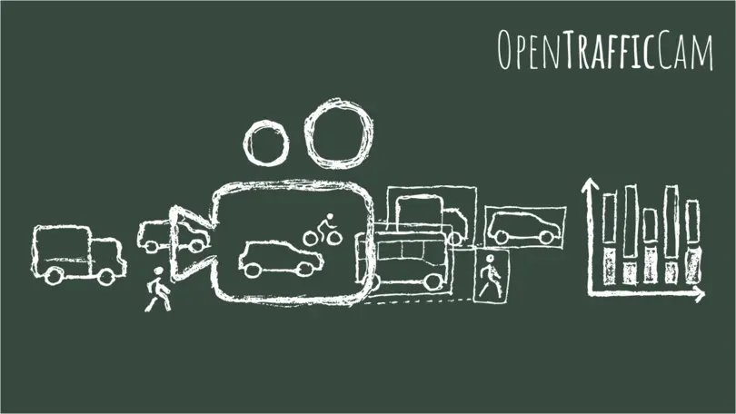

Kamera für Verkehrszählung: So unterstützt sie eine moderne Verkehrsplanung¶

Ob Leistungsfähigkeitsnachweise, Neu- oder Umbauten oder die Optimierung von Lichtsignalanlagen – Kommunen und Ingenieurbüros benötigen verlässliche Daten zu allen Verkehrsmodi, um Entscheidungen in der Verkehrsplanung objektiv begründen zu können. Angesichts der komplexen Anforderungen setzen Städte und Planer daher auf kamerabasierte Verkehrszählungen.
Die Verkehrszählung mit Kamera deckt große Erfassungsbereiche ab und liefert detaillierte Einblicke ohne viel Aufwand. Lesen Sie hier, welche Vor- und Nachteile Kameras bei Verkehrszählungen haben und was Sie beim Kauf der Technik beachten sollten.
Wie funktioniert eine Verkehrszählung mit Kamera?¶
Nach der Montage und Ausrichtung der Kamera zeichnet diese den Verkehr über einen gewünschten Zeitraum auf. Anschließend erkennt und klassifiziert eine KI die Fahrzeuge in den Bildern und verfolgt sie über mehrere Einzelbilder hinweg. Verkehrs- und Stadtplaner sind so in der Lage, Bewegungen zu analysieren und in auswertbare Kenngrößen umzuwandeln. Alternativ werden die aufgezeichneten Videos von Zählpersonal ausgewertet.
Welche Systeme für die Verkehrszählung mit Kamera gibt es?¶

Grundsätzlich gibt es zwei unterschiedliche Kamerasysteme, die ähnliche Anforderungen an das Datenschutzkonzept stellen:
- Direkt verarbeitende Systeme: Sie analysieren das Video direkt im Gerät und speichern es in der Regel nicht.
- Aufzeichnende Systeme (wie z. B. OpenTrafficCam): Sie speichern Videos für die nachträgliche Bearbeitung, was mehr Flexibilität bei Auswertung und Analyse bedeutet.
Was sind die Vorteile einer Verkehrszählung mit Kamera?¶
Die Verkehrszählung mit Kameras ist vielen Verkehrszählgeräten in mehreren Punkten voraus. Dabei lassen sich die Vorteile in drei Themenfelder einordnen:
Automatisierte & präzise Datenerfassung¶
- Ganzheitliche Datentiefe statt reiner Zählung: Viele Kameras ermöglichen es, nicht nur Verkehrszähldaten oder Verkehrsstärken zu erheben. In der angeschlossenen Analyse lassen sich auch komplette Trajektorien, Fahrzeugklassen und Bewegungsmuster erkennen. Das heißt: Es bleibt nicht bei einfachen Zähldaten, sondern es werden echte Verkehrsanalysen möglich – auch zu einem späteren Zeitpunkt.
- Hohe Genauigkeit: Bei einer passenden Kameraposition sowie guten Licht- und Wetterbedingungen können Verkehrs- und Stadtplaner Verkehrsteilnehmende sehr genau erfassen. Auch die Fahrtrichtung und der Verkehrsstrom lassen sich bei einer Verkehrszählung mit Kamera zuverlässig dokumentieren.
- Automatische Verkehrsdatenerfassung: Ungenauigkeiten und Fehler, wie sie bei manuellen Zählungen z. B. durch Aufmerksamkeitsschwankungen des Zählpersonals auftreten können, werden deutlich reduziert.
- Erfassung ganzer Szenen und komplexer Situationen: Kameras haben nicht nur einzelne Fahrstreifen im Blick, sondern auch komplette Knotenpunkte, temporäre Verkehrsführungen und multimodalen Mischverkehr.
- Langfristige Messung möglich: Mit dauerhafter Stromversorgung und kontinuierlicher Datenverbindung können Kameras über einen längeren Zeitraum eingesetzt werden.
Effizienz & Integration im Messprozess¶
- Zeitersparnis durch automatisierte Auswertung: Kameras, die Videos selbst analysieren oder deren Videos nachträglich über eine Software ausgewertet werden können, verringern den Zeitaufwand erheblich.
- Kosteneffizienz: Eine Kamera zur Verkehrszählung lässt sich schnell und einfach montieren und reduziert dank automatisierter Auswertungen Personalkosten. Gleichzeitig sind die Ausgaben für Hardware gering, da bei vielen temporären Messungen keine feste Strom- oder Dateninfrastruktur erforderlich ist.
- Nahtlose digitale Integration: Vom Aufzeichnen der Bilder über KI-Erkennung bis zur Analyse läuft alles digital. Aus den Kamerabildern generiert eine Software im Nachgang direkt auswertbare Ergebnisse wie Verkehrsflüsse, Heatmaps oder Zeitreihen.
- Flexible Montage: Städte und Kommunen können Kameras unkompliziert so ausrichten, dass sie optimale Sicht auf Knotenpunkte oder Streckenabschnitte bieten.
Praxis- & Zukunftsfähigkeit¶

- Projektbasierte Einsetzbarkeit: Wetterfeste mobile Kameras für die Fahrzeugzählung lassen sich ohne bauliche Eingriffe installieren und tagelang autonom betreiben – ideal für temporäre Projekte, Machbarkeitsstudien oder Verkehrskonzepte.
- Umfangreiche Auswertungsmöglichkeiten: Aus aufgezeichneten Videos können Stadt- und Verkehrsplaner ganze Trajektorien analysieren sowie Wartezeiten, Parkdauern oder Sättigungsverkehrsstärken bestimmen. Auch weitere nachträgliche Analysen – wie z. B. die Wartezeit von Radfahrenden – sind jederzeit möglich.
- Wetterunabhängiger Betrieb: Die Kameras sind grundsätzlich sehr robust. Einschränkungen gibt es nur bei Extremwetter wie Nebel oder Starkregen.
- Datenschutzkonformität: Datenschutz und Kamera stehen bei vielen Menschen oft im Widerspruch. Mit dem passenden Prozess, den richtigen technischen und organisatorischen Maßnahmen (TOM) sowie passender Konfiguration werden die gesetzlichen Datenschutzanforderungen erfüllt – bei aufzeichnenden wie verarbeitenden Kameras gleichermaßen.
- Zukunftssicherheit durch KI: Moderne Algorithmen wie YOLO erkennen verschiedene Verkehrsteilnehmer präzise und lassen sich durch gezielte Updates der Modelle auch für spezifische Klassen (z. B. Lastenräder oder eScooter) erweitern. Wenn es um multimodale Verkehrszählungen geht, führt heute kein Weg an der videobasierten Verkehrszählung vorbei.
Gibt es auch Nachteile bei der Kamera-Verkehrszählung?¶
Trotz aller Vorteile gibt es Einschränkungen bei der Verkehrszählung mit Kamera:
- Abhängigkeit von Aufnahmebedingungen: Schlechte Lichtverhältnisse, Nebel, Starkregen oder eine ungünstige Kameraposition können die Datenqualität beeinträchtigen.
- Höherer Planungs- und Qualitätsaufwand: Montage, Blickwinkel und Analyseparameter müssen sorgfältig geplant werden. Ob bei der Verkehrszählung per Kamera auf der Autobahn oder an einer LSA – es ist immer eine fachliche Plausibilitätsprüfung des Messaufbaus sowie der Ergebnisse notwendig.
- Begrenzte Aussagekraft bei unzureichender Auswertung: Ohne eine geeignete Software oder ein leistungsfähiges KI-Modell liefern Kameras im schlechtesten Fall nur personalintensive, simple Zählwerte und keine belastbare Verkehrsanalyse.
OpenTrafficCam
Erweist sich eine Kamera als die passende Lösung für ein Projekt, ist entscheidend, dass Hardware und Auswertung zu den fachlichen Anforderungen der Verkehrszählung passen. Moderne Systeme kombinieren dabei Datenerfassung, Datenschutz und Analyse in einem durchgängigen Workflow. Ein Beispiel dafür ist unsere OTCamera, die gemeinsam mit unserer nachgelagerten KI-basierten Auswertung und Analyse ein stimmiges und konsistentes Gesamtsystem bildet.
Kamera für Verkehrszählung kaufen: Worauf Sie achten sollten¶
Zur Erinnerung: Grundsätzlich lassen sich direkt verarbeitende Systeme und aufzeichnende Systeme unterscheiden. Dazu sollten Sie folgende Kriterien in Ihre Kaufentscheidung einfließen lassen:
Maximale Aufzeichnungsdauer¶
Die maximale Aufzeichnungsdauer entscheidet, wie lange eine Messkampagne ohne Unterbrechung laufen kann. Längere Laufzeiten bedeuten weniger Personalaufwand und eine bessere Datenkontinuität und Flexibilität. Mit langer Akkulaufzeit lassen sich auch mehrere Messungen hintereinander durchführen.
Montage¶
Achten Sie auf eine flexible Montagemöglichkeit. Je weniger Installationszeit, desto kürzer sind eventuelle Verkehrseinschränkungen und desto niedriger sind die Kosten bei temporären Zählungen. Bei Kameras zählt vor allem die einfache Ausrichtbarkeit, z. B. mit einem Kugelkopf.
Vandalismussicherheit¶
Kameras, die hoch genug außerhalb der Reichweite von Passanten hängen, sind kaum angreifbar. Zudem sind diese Systeme leichter und unauffälliger, so dass sie das "natürliche" Verhalten der Verkehrsteilnehmer nicht beeinflussen. Zudem benötigen sie weniger Platz im Lager bzw. Büro.
Anschaffungskosten¶
Direkt verarbeitende Systeme sind oft teurer und mit weiteren laufenden Kosten verbunden als aufzeichnende Systeme, die außerdem mit mehr Auswertungs- und Einsatzmöglichkeiten überzeugen.
Flexibilität¶
Kameras mit nachträglicher Verarbeitung ermöglichen weit mehr als reine Zählungen. Sie erlauben die tiefe Analyse vollständiger Trajektorien. Neben der automatisierten Analyse können Videos zudem gezielt vorgefiltert werden, etwa nach potenziell kritischen Situationen.
Validierbarkeit¶
Aufzeichnende Systeme ermöglichen es, unplausible Daten durch Einsicht in das Video zu überprüfen und durch eine gezielte Validierung die höchste Zählgenauigkeit zu erreichen.
Herstellerabhängigkeit¶
Open Source-Systeme wie unsere OpenTrafficCam sind unabhängig von Hersteller-Codes, so dass Sie bei der Auswertung der Videos keinem Herstellerzwang unterliegen. Es gibt zahlreiche Kamera-Anbieter, bei denen Sie sich an deren Auswertungstools binden.
Datenerhalt¶
Wie effizient Sie die Daten aus der Kamera in Auswertungs- oder Analyseplattformen integrieren können, entscheidet der Übertragungsweg. Mit einer automatisierten und flexiblen Übertragung sparen Sie Arbeitszeit und minimieren die Fehlerwahrscheinlichkeit.
Steuerung¶
Manche Verkehrszählungs-Kameras können nur rund um die Uhr im Dauerbetrieb aufzeichnen, andere dank Timer-Funktion auch ausschließlich relevante Zeiten erfassen. Die jeweiligen Steuerungsoptionen beeinflussen, wie präzise und situationsabhängig Zählungen geplant werden können, und wirken sich auf die Datenschutzkonformität sowie die Akkulaufzeit aus.
Betriebssicherheit¶
In puncto Betriebssicherheit ist ein Fernzugriff, etwa per WLAN oder Remote-Interface, sinnvoll: Er reduziert Wartungsfahrten und zeigt Probleme oder eine notwendige Standortanpassung in Echtzeit auf.
Datenschutz¶
Öffentliche Verkehrsaufnahmen sind nur zulässig, wenn sie DSGVO-konform anonymisiert oder pseudonymisiert werden – etwa durch sofortige Pixelung oder lokale Verarbeitung ohne Personenbezug. Das müssen Stadt- und Verkehrsplaner korrekt umsetzen und dokumentieren.
Hersteller von Verkehrszählungs-Kameras sollten darauf hinweisen, dass der Datenschutz schon in der Kampagnenplanung berücksichtigt und jedes Mal individuell abgestimmt werden muss – und ihre Kunden dabei unterstützen. Eine pauschale "Datenschutzkonformität" gibt es nicht.
Prozessierung¶
Entscheidend für eine belastbare Datenqualität ist, dass eine Kamera oder die entsprechende nachgelagerte Verarbeitung über eine zuverlässige Objekterkennung (PKW, LKW, Radfahrer oder Fußgänger) und -verfolgung verfügt.
Qualität bei Nacht oder schlechten Lichtverhältnissen¶
Nur Kameras mit guter Low-Light-Performance liefern auch bei Dunkelheit verwertbare Ergebnisse. Achten Sie beim Kauf auf dieses Feature, wenn Sie eine Verkehrszählung mit Kamera rund um die Uhr planen und auch auf wechselnde Bedingungen vorbereitet sein möchten.
KI-Leistung für Analyse¶
Da die Analyse bei direkt verarbeitenden Systemen im Akku-Betrieb erfolgt, müssen dort stromsparende KI-Modelle eingesetzt werden, die weniger leistungsfähig sind. Bei aufzeichnenden Systemen wie die OpenTrafficCam können Sie dagegen nachträglich mehr Rechenleistung nutzen – und für jede Szene das passende leistungsstarke KI-Modell auswählen.
Mit einer Kamera die volle Kontrolle über Verkehrsdaten gewinnen¶
Mit der Verkehrszählung per Kamera erfassen Kommunen und Planer Verkehrsdaten schnell, präzise und flexibel – von reinen Zählwerten bis hin zu detaillierten Bewegungsanalysen. Und das inklusive automatisierter Auswertung und mit voller Datenkontrolle.
Kontakt aufnehmen und mehr erfahren
Sie möchten mehr darüber erfahren, wie Sie durch eine Verkehrszählung mit Kamera belastbare Daten für eine zukunftssichere Verkehrsplanung gewinnen? Dann kontaktieren Sie uns jetzt für ein Beratungsgespräch und erfahren Sie mehr über unser praxisbewährtes System!